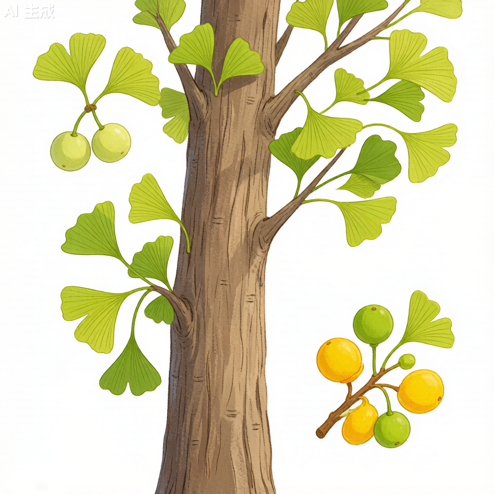

银杏 Ginkgo biloba
白果、公孙树、鸭掌树 · 银杏科银杏属 · 国家一级保护 · 活化石

银杏植物学插画（AI生成）
形态特征
落叶乔木，高达40米，胸径可达4米。树冠幼时圆锥形，老则广卵形。树皮灰褐色，深纵裂。叶扇形，有长柄，淡绿色，无毛，有多数叉状细脉——这是裸子植物中独一无二的叶脉类型。雄球花葇荑花序状，雌球花具长梗。种子核果状，外种皮肉质有白粉，熟时淡黄色或橙黄色；中种皮骨质白色。银杏为中生代孑遗的稀有树种，被誉为植物界的"活化石"，在地球上已存在约2.7亿年。
分布与生境
中国特有树种，浙江天目山有野生状态的树木。生于海拔500-1,000米的酸性黄壤、排水良好的天然林中。全国广泛栽培，北至沈阳南至广州。喜光，深根性，抗风抗污染，寿命极长，树龄可达数千年。
分类学
银杏在植物分类中地位极为独特——独占一纲一目一科一属一种。其保留了许多古老植物特征：叶脉为二叉分枝式（非平行脉亦非网状脉），精子具纤毛可游动，均为从蕨类向裸子植物演化的重要证据。山东莒县浮来山定林寺有一株树龄约4,000年的古银杏。
形态对比
| 性状 | 银杏 | 松树 |
|---|---|---|
| 叶形 | 扇形，二叉分枝脉 | 针形或线形 |
| 种子 | 核果状，外种皮肉质 | 球果，种子有翅 |
| 分类地位 | 独一目一科一属一种 | 多属多种 |
| 起源年代 | ~2.7亿年 | ~2亿年 |
生态与文化
喜光树种，深根性，抗风、抗污染能力强，对二氧化硫和氯气有较强抗性。寿命极长，树龄可达数千年。秋季叶色金黄，为重要观赏景观。雌株所结果实（白果）有特殊气味。
利用价值
木材优良，可作家具雕刻。种仁（白果）可食但有小毒。银杏叶提取物用于改善记忆。秋季金黄叶色为重要观赏价值。各地千年古银杏为历史文化重要载体。